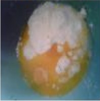

Resep Kue Maryam
Bahan - Bahan:
- 250 gr tepung terigu
- 1 butir telur
- 100 ml air hangat
- 2 sdm susu bubuk (optional)
- 1/2 sdt garam
- margarin leleh untuk olesan
- minyak untuk merendam
Langkah-langkah
- Campur semua bahan menjadi satu

- Uleni sampai kalis (aku pake tangan) jangan takut jika adonan lengket ya, lumuri tangan sesekali dengan tepung (tapi jangan menambahkan tepung) uleni terus sampai adonan kalis
- Kalisnya adonan canai tidak sekalis adoanan roti ya, kira2 seperti ini sudah cukup